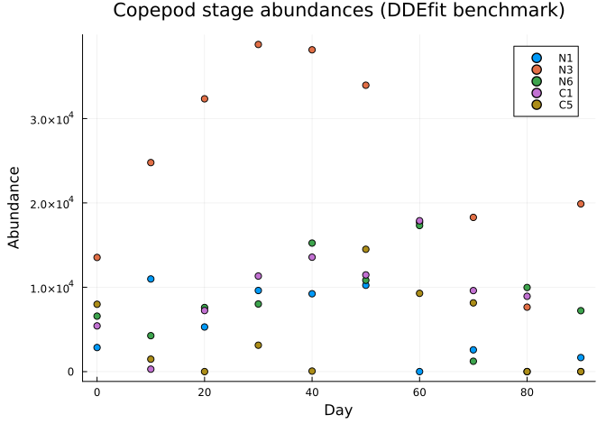
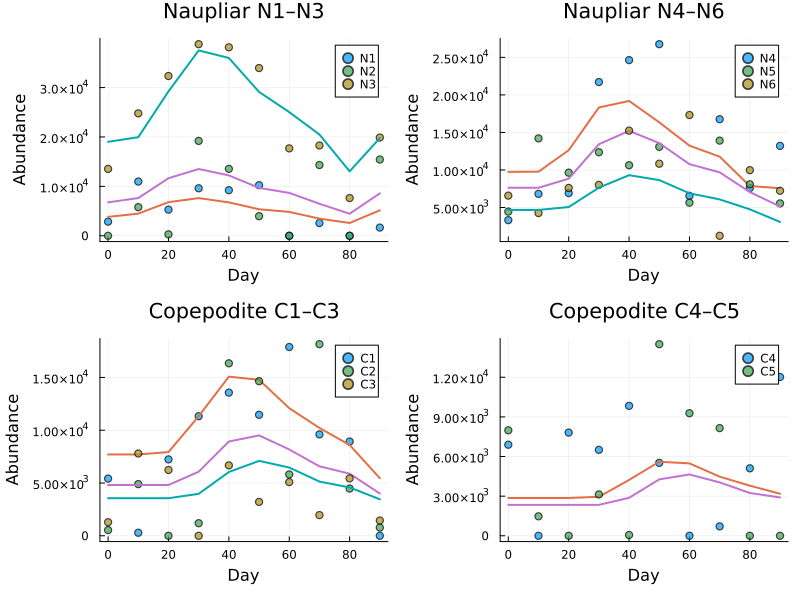
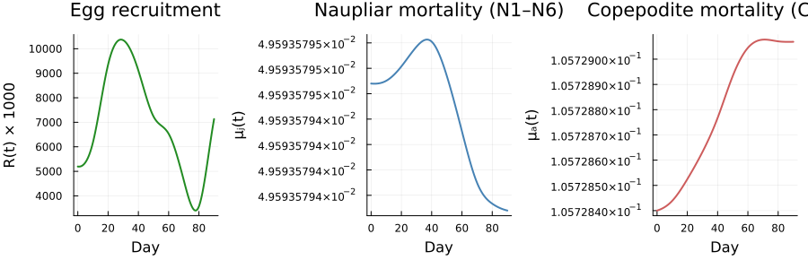

Copepod Stage-Structured Population Model (Wood 2001 DDE)
Overview
This vignette demonstrates PartiallySpecifiedModels.jl on the canonical ecological benchmark from Wood (2001): an 11-stage fixed-duration delay-differential equation (DDE) model of Calanus finmarchicus population dynamics.
The copepod passes through 11 pre-adult developmental stages: six naupliar stages (N1–N6) and five copepodite stages (C1–C5; adult C6 is not included in the stage table). Fixed stage durations $\tau_1, \dots, \tau_{11}$ are known from laboratory rearing experiments, while three strictly positive biological vital rates are unknown smooth functions of time:
\[R(t) > 0\]
— egg recruitment rate (scaled by $1000$)\[\mu_j(t) > 0\]
— naupliar (N1–N6) per-capita mortality rate\[\mu_a(t) > 0\]
— copepodite (C1–C5) per-capita mortality rate
Dataset provenance: The bundled dataset
data/cop.datis the simulated 11-stage benchmark dataset distributed with Simon Wood’sDDEfitsoftware (10 sampling days over $[0, 90]$ days across stages N1–N6 and C1–C5).
Setup
using PartiallySpecifiedModels
using PartiallySpecifiedModels: solve
using OrdinaryDiffEq
using DelimitedFiles
using Statistics
using Plots
using PrintfData and Stage Weighting
Raw stage counts span four orders of magnitude (from 0 up to 38,783 in N3). An unweighted Gaussian loss lets high-abundance naupliar stages dominate the objective by $\sim 100\times$ over late copepodites. Following Wood (2001), we weight each stage inversely by its empirical variance so every developmental stage contributes equitably:
data_path = joinpath(@__DIR__, "..", "..", "data", "cop.dat")
raw = readdlm(data_path)
data_times = Float64.(raw[:, 1])
data_values = Float64.(raw[:, 2:12]) # N1–N6, C1–C5
n_times, n_stages = size(data_values)
stage_names = ["N1", "N2", "N3", "N4", "N5", "N6", "C1", "C2", "C3", "C4", "C5"]
col_stds = [max(std(data_values[:, j]), 1.0) for j in 1:n_stages]
w_stage = 1.0 ./ (col_stds .^ 2)
w_stage ./= mean(w_stage)
data_weights = repeat(reshape(w_stage, 1, n_stages), n_times, 1)
println("Observations: $n_times times × $n_stages stages (N1–N6, C1–C5)")
println("Time range: $(data_times[1])–$(data_times[end]) days")Observations: 10 times × 11 stages (N1–N6, C1–C5)
Time range: 0.0–90.0 daysp_data = plot(xlabel="Day", ylabel="Abundance",
title="Copepod stage abundances (DDEfit benchmark)",
legend=:topright)
for j in [1, 3, 6, 7, 11]
scatter!(p_data, data_times, data_values[:, j], label=stage_names[j], ms=4)
end
p_data
Fixed-Duration Stage-Structured DDE Model
Following Nisbet & Gurney (1983) and Wood (1994, 2001), each stage $i$ has a fixed residence duration $\tau_i$ rather than an exponential 1-box rate. Let $T_i = \sum_{k=1}^i \tau_k$ be cumulative age at exit from stage $i$, and track two auxiliary cumulative mortality integrals:
\[\frac{dL_j}{dt} = \mu_j(t), \qquad \frac{dL_a}{dt} = \mu_a(t),\]
with steady-state pre-history $L_j(t) = \mu_j(0)\,t$ and $L_a(t) = \mu_a(0)\,t$ for $t \le 0$. An individual maturing out of stage $i$ at time $t$ was recruited at $t - T_i$ and survived cumulative mortality $\Lambda_i(t)$:
\[\Lambda_i(t) = \begin{cases} L_j(t) - L_j(t - T_i), & i \le 6, \\ \big(L_j(t - (T_i - T_6)) - L_j(t - T_i)\big) + \big(L_a(t) - L_a(t - (T_i - T_6))\big), & i \ge 7. \end{cases}\]
The maturation flux out of stage $i$ is $M_i(t) = R_1(t - T_i)\exp(-\Lambda_i(t))$, yielding the exact stage-balance DDEs:
\[\frac{ds_i}{dt} = R_i(t) - M_i(t) - \mu_i(t)\,s_i(t), \qquad R_1(t) = 1000\,R(t),\quad R_i(t) = M_{i-1}(t).\]
# Known fixed stage durations (days) for N1–N6 and C1–C5 (Wood 2001)
durations = [0.75, 1.4, 4.55, 2.8, 2.5, 1.7, 3.5, 3.1, 3.2, 3.7, 4.7]
cum_T = cumsum(durations)
T_N6 = cum_T[6]
copepod_delays = sort(unique(vcat(cum_T, [cum_T[i] - T_N6 for i in 7:11])))
@inline expm1_ratio(x) = abs(x) < 1e-8 ? (1 - x / 2 + x^2 / 6) : (1 - exp(-x)) / x
function copepod_dde!(du, u, h, p, t)
R_t = p.R(t) * 1000.0
μ_j = p.mu_j(t)
μ_a = p.mu_a(t)
du[12] = μ_j
du[13] = μ_a
Lj_now, La_now = u[12], u[13]
inflow = R_t
@inbounds for i in 1:11
t_rec = t - cum_T[i]
R_rec = p.R(t_rec <= 0.0 ? 0.0 : t_rec) * 1000.0
if i <= 6
cum_mort = Lj_now - h(p, t_rec; idxs=12)
death = μ_j
else
t_trans = t - (cum_T[i] - T_N6)
cum_mort = (h(p, t_trans; idxs=12) - h(p, t_rec; idxs=12)) +
(La_now - h(p, t_trans; idxs=13))
death = μ_a
end
maturation = R_rec * exp(-cum_mort)
du[i] = inflow - maturation - death * u[i]
inflow = maturation
end
end
function copepod_history(p, t)
R0 = p.R(0.0) * 1000.0
μ_j0 = p.mu_j(0.0)
μ_a0 = p.mu_a(0.0)
T = promote_type(typeof(R0), typeof(μ_j0), typeof(μ_a0), typeof(t))
u = zeros(T, 13)
inflow = T(R0)
@inbounds for i in 1:11
death = i <= 6 ? T(μ_j0) : T(μ_a0)
τ = durations[i]
u[i] = inflow * τ * expm1_ratio(death * τ)
inflow = inflow * exp(-death * τ)
end
u[12] = T(μ_j0) * t
u[13] = T(μ_a0) * t
u
end
copepod_u0(p) = copepod_history(p, 0.0)copepod_u0 (generic function with 1 method)Strictly Positive Vital Rate Approximators
Using ShapeConstrainedBSplineApproximator(..., :positive) enforces $R(t) > 0$, $\mu_j(t) > 0$, and $\mu_a(t) > 0$ at every point during optimization and uncertainty quantification, ruling out biologically impossible negative recruitment or mortality rates:
approx_R = ShapeConstrainedBSplineApproximator(:R, (0.0, 90.0), 12, :positive;
initial = t -> begin
μ, σ = 30.0, 20.0
(0.01 + 0.39894228 / σ * exp(-(t - μ)^2 / σ^2)) * 400.0
end)
approx_mu_j = ShapeConstrainedBSplineApproximator(:mu_j, (0.0, 90.0), 12, :positive;
initial = t -> 0.1 * exp(-0.02 * t))
approx_mu_a = ShapeConstrainedBSplineApproximator(:mu_a, (0.0, 90.0), 12, :positive;
initial = t -> 0.1)ShapeConstrainedBSplineApproximator(:mu_a, (0.0, 90.0), 12, :positive, [1.0 0.0 … 0.0 0.0; 0.0 1.0 … 0.0 0.0; … ; 0.0 0.0 … 1.0 0.0; 0.0 0.0 … 0.0 1.0], var"#14#15"())Building and Solving
prob = PSMProblem(copepod_dde!, copepod_u0, (0.0, 90.0),
[approx_R, approx_mu_j, approx_mu_a];
data_times = data_times,
data_values = data_values,
data_weights = data_weights,
obs_to_state = collect(1:11),
delays = copepod_delays,
history = copepod_history,
known_params = NamedTuple(),
likelihood = GaussianLikelihood(),
solver = BS3(),
order_discontinuity_t0 = 2,
abstol = 1e-5, reltol = 1e-5, maxiters = 10_000)
sol = solve(prob, LAML(maxiters=40, verbose=false))
println("Converged: ", sol.convergence.converged, " ($(sol.convergence.reason))")
println("Weighted loss: ", @sprintf("%.4e", sol.data_loss))
println("Penalized obj: ", @sprintf("%.4e", sol.objective))
println("EDF: ", round(sol.edf, digits=2))
println("Smoothing λ: ", [round(s, sigdigits=4) for s in sol.smoothing_params])┌ Warning: LAML: the objective converged but the parameters did not — one more PCLS step from the reported fit moves β by 2.03 (relative), above 0.001. The fit stopped on a flat ridge of the penalized objective: the fitted FUNCTIONS are usable, but individual coefficients and their covariance are not pinned. See `convergence.ridge` and `convergence.final_parameter_step`.
└ @ PartiallySpecifiedModels ~/Projects/psm/PartiallySpecifiedModels.jl/src/solver.jl:2451
Converged: true (converged_tol)
Weighted loss: 1.7948e+09
Penalized obj: 1.0828e+09
EDF: 6.61
Smoothing λ: [4.878e6, 6.013e15, 2.354e17]Results
Fitted Trajectories
pred = sol.fitted_values
plots_stages = []
for (stages, title) in [([1,2,3], "Naupliar N1–N3"), ([4,5,6], "Naupliar N4–N6"),
([7,8,9], "Copepodite C1–C3"), ([10,11], "Copepodite C4–C5")]
p = plot(xlabel="Day", ylabel="Abundance", title=title, legend=:topright)
for j in stages
scatter!(p, data_times, data_values[:, j], label=stage_names[j], ms=4, alpha=0.7)
plot!(p, data_times, pred[:, j], lw=2, label=nothing)
end
push!(plots_stages, p)
end
plot(plots_stages..., layout=(2, 2), size=(800, 600))
Estimated Strictly Positive Vital Rates
t_grid = range(0.0, 90.0, length=200)
p1 = plot(t_grid, [sol.unknown_functions[:R](t) * 1000.0 for t in t_grid],
xlabel="Day", ylabel="R(t) × 1000",
title="Egg recruitment", lw=2, color=:forestgreen, label=nothing)
p2 = plot(t_grid, [sol.unknown_functions[:mu_j](t) for t in t_grid],
xlabel="Day", ylabel="μⱼ(t)",
title="Naupliar mortality (N1–N6)", lw=2, color=:steelblue, label=nothing)
p3 = plot(t_grid, [sol.unknown_functions[:mu_a](t) for t in t_grid],
xlabel="Day", ylabel="μₐ(t)",
title="Copepodite mortality (C1–C5)", lw=2, color=:indianred, label=nothing)
plot(p1, p2, p3, layout=(1, 3), size=(900, 300))
Diagnostic Plots
diag = psm_appraise(sol)
p_qq = scatter(diag.qq_theoretical, diag.qq_sample,
xlabel="Theoretical quantiles", ylabel="Sample quantiles",
title="QQ Plot of Residuals", ms=3, legend=false, color=:steelblue)
mn, mx = extrema(vcat(diag.qq_theoretical, diag.qq_sample))
plot!(p_qq, [mn, mx], [mn, mx], color=:red, ls=:dash, label="")
p_rf = scatter(diag.fitted, diag.residuals,
xlabel="Fitted values", ylabel="Residuals",
title="Residuals vs Fitted", ms=3, legend=false, color=:steelblue)
hline!(p_rf, [0], color=:gray, ls=:dot)
p_hist = histogram(diag.residuals, normalize=:pdf,
xlabel="Residuals", ylabel="Density",
title="Histogram of Residuals", legend=false, color=:steelblue, alpha=0.7)
p_of = scatter(diag.observed, diag.fitted,
xlabel="Observed", ylabel="Fitted",
title="Observed vs Fitted", ms=3, legend=false, color=:steelblue)
mn2, mx2 = extrema(vcat(diag.observed, diag.fitted))
plot!(p_of, [mn2, mx2], [mn2, mx2], color=:red, ls=:dash, label="")
plot(p_qq, p_rf, p_hist, p_of, layout=(2, 2), size=(700, 600))
Summary
This faithful Wood (2001) copepod benchmark showcases:
- Fixed-duration stage-structured DDEs via
delaysand parameter-dependenthistory - Strictly positive unknown vital rates via
ShapeConstrainedBSplineApproximator(..., :positive) - Stage-weighted Gaussian LAML balancing observations spanning four orders of magnitude across stages N1–N6 and C1–C5